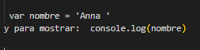
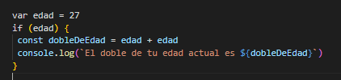
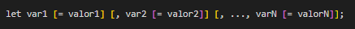

INVESTIGACION JS
Trabajo Practico N°6
Curso: 5°4°
Carrera: Tecnico Programador
Ejercicio 1
En el año 1995 Brendan Eich, lanza el lenguaje Javascript; un lenguaje para interactuar con páginas web. Al año, ECMAScrip un consorcio Europeo que permitieron generar un estándar para que los navegadores lo siguieran, quienes en 1997 lanzaron los primeros estándares para la primera versión de un lenguaje de scripting “ECMAScript”. Desde ese momento hasta el día de hoy el grupo TC39 son las personas encargadas de traer nuevas funciones al ECMA. Las versiones que hay de JavaScript en el mercado son:
• ES6
• ES7
• ES8
• ES9
• ES10
• ES11
• ES12
• ES13
Ejercicio 2
Para integrar en HTML JS lo que se hace es usar la etiqueta llamada script
Ejemplo:
Archivo externo:

Archivo interno:

Ejercicio 3
Variables
VAR:Le dice a JS que que van a declarar una variablep
ej
CONST
tiene alcance de bloque, mientras que var tiene alcance de función. Un bloque se refiere a cualquier espacio que esté entre llaves de apertura y cierre.
Ej:
LET:
es una variable que limita un alcance al bloque.
Ej:
TIPOS DE DATOS:
TIPOS DE DATOS:
Numero
biglnt
string
booleand
null
undifined
object
symbol
EXPRECIONES REGULARES:
Es un sistema que se usa para buscar, remplazar o obtener texto utilizando patrones. Los patrones se representan como una cadena de texto, donde dependiendo el símbolo el significado cambia
Ejercicio 4
Funciones:
Funciones autoejecutables

Funciones anónimas

Funciones como objetos

Funcioes por exprecion

Funciones por declaraciónor

Ejercicio 6
Estructuras de control:
Son instrucciones que nos dejan evaluar si se puede cumplir una condición.
Condicionales
Ciclos o bucles
For
While
Switch
Ejercicio 7
Dom es una interfaz de programación, para documentos HTML y XML. Que ayuda a la presentación estructurada del archivo y define que programas pueden modificar, su estructura, su estilo y contenido

Ejercicio 8
Objet Map: es un diccionario clave-valor donde cualquier tipo de dato puede ser usado como clave. Las claves solo pueden ser cadenas de texto.